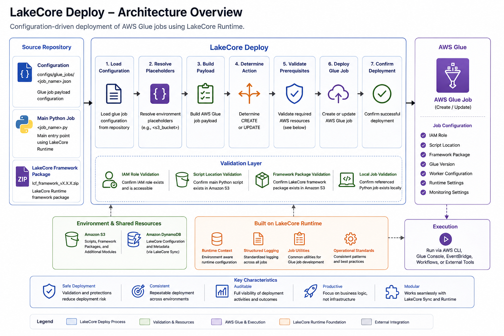
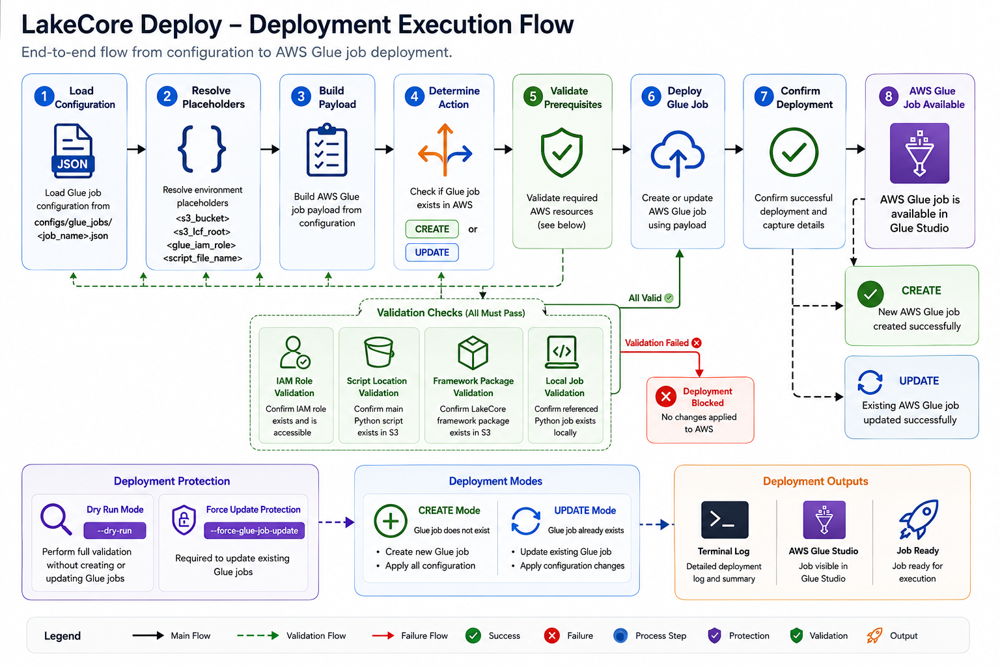
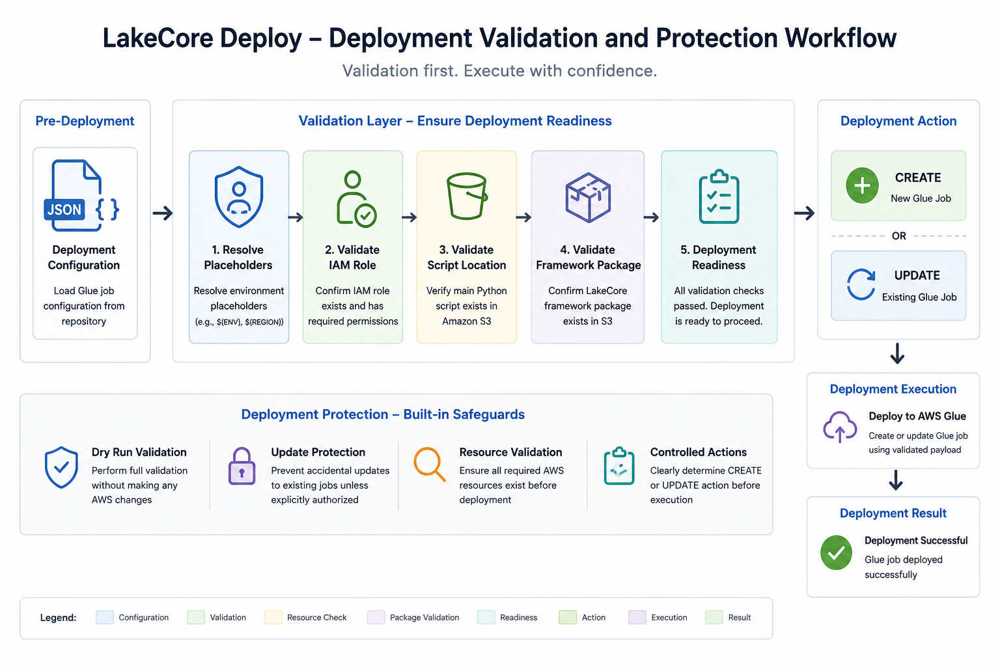
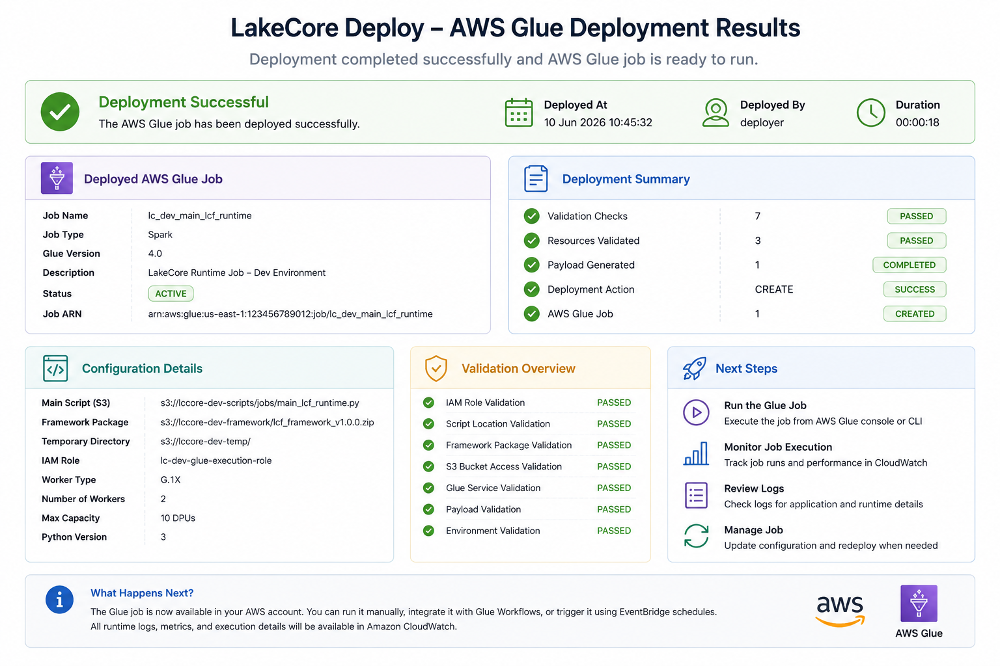

Configuration Driven Deployment
Define AWS Glue jobs using JSON based deployment configurations rather than manual AWS Console administration.
Configuration Driven AWS Glue Job Deployment Framework
LakeCore Deploy is an intelligent deployment framework designed to automate the creation, validation, and management of AWS Glue jobs across multiple environments.
Built on top of LakeCore Runtime, LakeCore Deploy eliminates manual AWS Glue Console administration by generating deployment payloads from configuration files, validating deployment prerequisites, and creating or updating Glue jobs through a controlled and repeatable process.

Managing AWS Glue jobs manually can become increasingly complex as data platforms grow.
Configuration settings, script locations, framework packages, IAM roles, worker configurations, monitoring settings, and environment specific values must all be maintained consistently across environments.
LakeCore Deploy automates this process through a configuration driven deployment model that transforms deployment definitions into fully configured AWS Glue jobs.
Define AWS Glue jobs using JSON based deployment configurations rather than manual AWS Console administration.
Automatically generates complete AWS Glue deployment payloads from configuration definitions.
Supports environment specific deployments through automatic placeholder resolution and environment aware configuration management.
Creates new AWS Glue jobs and manages updates to existing deployments using a controlled workflow.
Validates all required deployment prerequisites before any AWS resources are modified.
Includes built in safeguards to reduce deployment risk and prevent accidental modifications.

Reduce reliance on AWS Glue Studio for job creation and configuration management.
Ensure all AWS Glue jobs are deployed using consistent configuration standards and deployment practices.
Deploy the same job configuration across development, staging, and production environments with confidence.
Built in validation and deployment protection mechanisms help prevent configuration errors and accidental updates.
Automate repetitive deployment tasks and accelerate project delivery cycles.
Maintain consistent AWS Glue job configurations across all environments.


LakeCore Deploy works alongside LakeCore Runtime and LakeCore Sync to provide a complete deployment lifecycle from source repository to executable AWS Glue job.
Buy NowLakeCore Deploy works alongside LakeCore Runtime and LakeCore Sync to provide a complete deployment lifecycle from source repository to executable AWS Glue job.